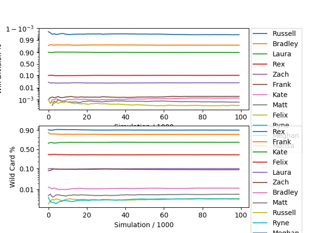

Elements of Physical Fantasy Power Rankings
Because trash talk is better with stats to back it up.
Week 10
Playoff Odds
The current playoff standings are:
- Russell (Div Winner)
- Laura (Div Winner)
- Brad (Div Winner)
- Rex
- Frank
- Kate
In order to predict the outcome of future games, I have fit the recorded scores for a team (up to this week) with a gaussian. Then I simulated the rest of the games in the season 1,000,000 times. In each simulated game, the score of a team is randomly chosen from the fitted distribution. The odds of making the playoffs are the fraction of simulated seasons in which each team makes the playoffs. The expected wins are the expected number of wins for the remaining games. The results are below.
| Team | Exp. Wins | Div. Winner (%) | Wild Card (%) | Make Playoffs (%) |
|---|---|---|---|---|
| Laura Havener | 3.198 | 90.097 | 9.903 | 100.000 |
| Russell Smith | 3.456 | 99.640 | 0.356 | 99.996 |
| Rex Brown | 2.843 | 9.903 | 90.010 | 99.913 |
| Bradley Axen | 2.707 | 97.381 | 1.166 | 98.547 |
| Frank Zhao | 2.130 | 0.189 | 84.652 | 84.841 |
| Kate Reed | 1.954 | 0.137 | 69.173 | 69.310 |
| Felix Clark | 1.254 | 0.034 | 34.897 | 34.931 |
| Zach Greene | 1.728 | 2.557 | 8.919 | 11.476 |
| Matt Anthony | 1.430 | 0.062 | 0.584 | 0.646 |
| Ryne Carbone | 1.504 | 0.000 | 0.340 | 0.340 |
| Meghan Frate | 1.328 | 0.000 | 0.000 | 0.000 |
| Marisa Baglaneas | 0.467 | 0.000 | 0.000 | 0.000 |
The odds of winning the division and of getting a wild card spot are plotted below as a function of the number of simulated seasons.

| # | Owner | Record | Power | LSQ | 2SD | Colley | AWP | SOS | Luck | Cons | Tier |
|---|---|---|---|---|---|---|---|---|---|---|---|
| 1 | Russell Smith | 7-2 | 96.414 | 1.000 | 1.000 | 1.000 | 0.889 | 0.899 | 0.947 | 1.000 | 1 |
| 2 | Laura Havener | 7-2 | 94.671 | 0.991 | 0.927 | 0.992 | 0.727 | 0.863 | 0.757 | 0.876 | 1 |
| 3 | Rex Brown | 6-3 | 92.250 | 0.935 | 0.709 | 0.853 | 0.697 | 0.840 | 0.833 | 0.827 | 2 |
| 4 | Bradley Axen 2 | 6-3 | 89.844 | 0.977 | 0.750 | 0.855 | 0.525 | 0.852 | 0.667 | 0.815 | 3 |
| 5 | Kate Reed 1 | 5-4 | 88.579 | 0.908 | 0.667 | 0.799 | 0.505 | 1.000 | 0.770 | 0.766 | 3 |
| 6 | Frank Zhao 1 | 5-4 | 88.335 | 0.930 | 0.600 | 0.752 | 0.566 | 0.887 | 0.777 | 0.831 | 3 |
| 7 | Felix Clark 2 | 5-4 | 87.834 | 0.833 | 0.639 | 0.762 | 0.556 | 0.928 | 0.841 | 0.760 | 3 |
| 8 | Zach Greene 1 | 4-5 | 83.212 | 0.817 | 0.462 | 0.642 | 0.364 | 0.925 | 0.763 | 0.851 | 4 |
| 9 | Ryne Carbone 1 | 3-6 | 77.635 | 0.629 | 0.357 | 0.496 | 0.404 | 0.881 | 0.997 | 0.660 | 5 |
| 10 | Matt Anthony | 3-6 | 76.445 | 0.633 | 0.395 | 0.487 | 0.333 | 0.865 | 0.808 | 0.703 | 5 |
| 11 | Meghan Frate | 2-7 | 70.419 | 0.572 | 0.171 | 0.372 | 0.303 | 0.909 | 1.000 | 0.680 | 5 |
| 12 | Marisa Baglaneas | 1-8 | 60.436 | 0.475 | 0.138 | 0.283 | 0.131 | 0.956 | 0.893 | 0.541 | 5 |
Metrics
| Power | Final weighted combination of the other metrics |
| LSQ | Iterative Least Square minimization, comparing predictive ranking difference to score outcome |
| 2SD | Two step dominance matrix, recency weighting |
| Colley | Colley matrix ranking, only factors outcome |
| AWP | Aggregate winning percentage |
| SOS | Relative strength of schedule, based on LSQ rankings |
| Luck | Luck ranking boost, factors opponents score and aggregrate wins |
| Cons | Weekly scoring consistency metric |
| Tier | Clustering by finding minima in Gaussian Kernel Density Estimation |